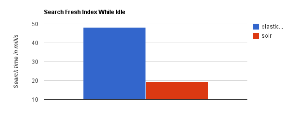
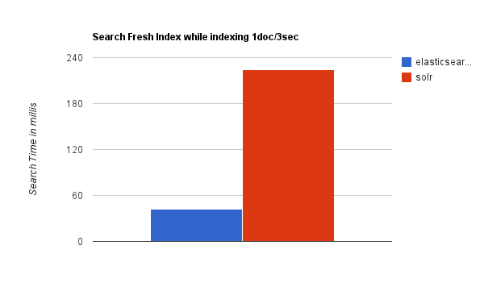
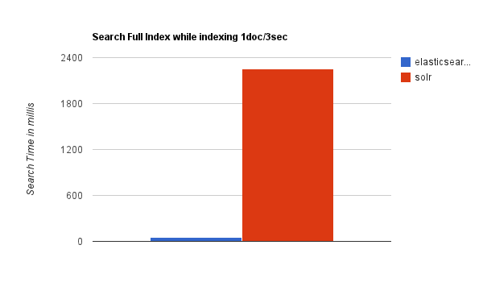
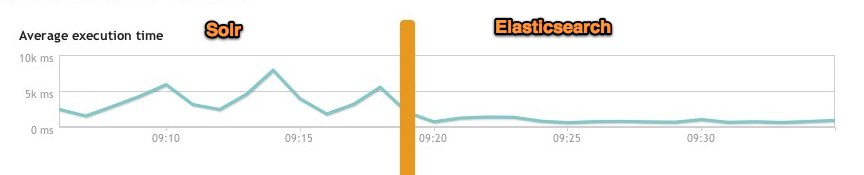

搜索引擎选型调研文档
Elasticsearch简介*
Elasticsearch是一个实时的分布式搜索和分析引擎。它可以帮助你用前所未有的速度去处理大规模数据。
它可以用于全文搜索，结构化搜索以及分析，当然你也可以将这三者进行组合。
Elasticsearch是一个建立在全文搜索引擎 Apache Lucene™ 基础上的搜索引擎，可以说Lucene是当今最先进，最高效的全功能开源搜索引擎框架。
但是Lucene只是一个框架，要充分利用它的功能，需要使用JAVA，并且在程序中集成Lucene。需要很多的学习了解，才能明白它是如何运行的，Lucene确实非常复杂。
Elasticsearch使用Lucene作为内部引擎，但是在使用它做全文搜索时，只需要使用统一开发好的API即可，而不需要了解其背后复杂的Lucene的运行原理。
当然Elasticsearch并不仅仅是Lucene这么简单，它不但包括了全文搜索功能，还可以进行以下工作:
-
分布式实时文件存储，并将每一个字段都编入索引，使其可以被搜索。
-
实时分析的分布式搜索引擎。
-
可以扩展到上百台服务器，处理PB级别的结构化或非结构化数据。
这么多的功能被集成到一台服务器上，你可以轻松地通过客户端或者任何你喜欢的程序语言与ES的RESTful API进行交流。
Elasticsearch的上手是非常简单的。它附带了很多非常合理的默认值，这让初学者很好地避免一上手就要面对复杂的理论，
它安装好了就可以使用了，用很小的学习成本就可以变得很有生产力。
随着越学越深入，还可以利用Elasticsearch更多高级的功能，整个引擎可以很灵活地进行配置。可以根据自身需求来定制属于自己的Elasticsearch。
使用案例：
-
维基百科使用Elasticsearch来进行全文搜做并高亮显示关键词，以及提供search-as-you-type、did-you-mean等搜索建议功能。
-
英国卫报使用Elasticsearch来处理访客日志，以便能将公众对不同文章的反应实时地反馈给各位编辑。
-
StackOverflow将全文搜索与地理位置和相关信息进行结合，以提供more-like-this相关问题的展现。
-
GitHub使用Elasticsearch来检索超过1300亿行代码。
-
每天，Goldman Sachs使用它来处理5TB数据的索引，还有很多投行使用它来分析股票市场的变动。
但是Elasticsearch并不只是面向大型企业的，它还帮助了很多类似DataDog以及Klout的创业公司进行了功能的扩展。
Elasticsearch的优缺点**:
优点
- Elasticsearch是分布式的。不需要其他组件，分发是实时的，被叫做”Push replication”。
- Elasticsearch 完全支持 Apache Lucene 的接近实时的搜索。
- 处理多租户（multitenancy）不需要特殊配置，而Solr则需要更多的高级设置。
- Elasticsearch 采用 Gateway 的概念，使得完备份更加简单。
- 各节点组成对等的网络结构，某些节点出现故障时会自动分配其他节点代替其进行工作。
缺点
- 只有一名开发者（当前Elasticsearch GitHub组织已经不只如此，已经有了相当活跃的维护者）
- 还不够自动（不适合当前新的Index Warmup API）
Solr简介*
Solr（读作“solar”）是Apache Lucene项目的开源企业搜索平台。其主要功能包括全文检索、命中标示、分面搜索、动态聚类、数据库集成，以及富文本（如Word、PDF）的处理。Solr是高度可扩展的，并提供了分布式搜索和索引复制。Solr是最流行的企业级搜索引擎，Solr4 还增加了NoSQL支持。
Solr是用Java编写、运行在Servlet容器（如 Apache Tomcat 或Jetty）的一个独立的全文搜索服务器。 Solr采用了 Lucene Java 搜索库为核心的全文索引和搜索，并具有类似REST的HTTP/XML和JSON的API。Solr强大的外部配置功能使得无需进行Java编码，便可对其进行调整以适应多种类型的应用程序。Solr有一个插件架构，以支持更多的高级定制。
因为2010年 Apache Lucene 和 Apache Solr 项目合并，两个项目是由同一个Apache软件基金会开发团队制作实现的。提到技术或产品时，Lucene/Solr或Solr/Lucene是一样的。
Solr的优缺点
优点
- Solr有一个更大、更成熟的用户、开发和贡献者社区。
- 支持添加多种格式的索引，如：HTML、PDF、微软 Office 系列软件格式以及 JSON、XML、CSV 等纯文本格式。
- Solr比较成熟、稳定。
- 不考虑建索引的同时进行搜索，速度更快。
缺点
- 建立索引时，搜索效率下降，实时索引搜索效率不高。
Elasticsearch与Solr的比较*
当单纯的对已有数据进行搜索时，Solr更快。

当实时建立索引时, Solr会产生io阻塞，查询性能较差, Elasticsearch具有明显的优势。

随着数据量的增加，Solr的搜索效率会变得更低，而Elasticsearch却没有明显的变化。

综上所述，Solr的架构不适合实时搜索的应用。
实际生产环境测试*
下图为将搜索引擎从Solr转到Elasticsearch以后的平均查询速度有了50倍的提升。

Elasticsearch 与 Solr 的比较总结
- 二者安装都很简单；
- Solr 利用 Zookeeper 进行分布式管理，而 Elasticsearch 自身带有分布式协调管理功能;
- Solr 支持更多格式的数据，而 Elasticsearch 仅支持json文件格式；
- Solr 官方提供的功能更多，而 Elasticsearch 本身更注重于核心功能，高级功能多有第三方插件提供；
- Solr 在传统的搜索应用中表现好于 Elasticsearch，但在处理实时搜索应用时效率明显低于 Elasticsearch。
Solr 是传统搜索应用的有力解决方案，但 Elasticsearch 更适用于新兴的实时搜索应用。
其他基于Lucene的开源搜索引擎解决方案*
- 直接使用 Lucene
说明：Lucene 是一个 JAVA 搜索类库，它本身并不是一个完整的解决方案，需要额外的开发工作。
优点：成熟的解决方案，有很多的成功案例。apache 顶级项目，正在持续快速的进步。庞大而活跃的开发社区，大量的开发人员。它只是一个类库，有足够的定制和优化空间：经过简单定制，就可以满足绝大部分常见的需求；经过优化，可以支持 10亿+ 量级的搜索。
缺点：需要额外的开发工作。所有的扩展，分布式，可靠性等都需要自己实现；非实时，从建索引到可以搜索中间有一个时间延迟，而当前的“近实时”(Lucene Near Real Time search)搜索方案的可扩展性有待进一步完善
说明：基于 Lucene 的，支持分布式，可扩展，具有容错功能，准实时的搜索方案。
优点：开箱即用，可以与 Hadoop 配合实现分布式。具备扩展和容错机制。
缺点：只是搜索方案，建索引部分还是需要自己实现。在搜索功能上，只实现了最基本的需求。成功案例较少，项目的成熟度稍微差一些。因为需要支持分布式，对于一些复杂的查询需求，定制的难度会比较大。
说明：Map/Reduce 模式的，分布式建索引方案，可以跟 Katta 配合使用。
优点：分布式建索引，具备可扩展性。
缺点：只是建索引方案，不包括搜索实现。工作在批处理模式，对实时搜索的支持不佳。
说明：基于 Lucene 的一系列解决方案，包括 准实时搜索 zoie ，facet 搜索实现 bobo ，机器学习算法 decomposer ，摘要存储库 krati ，数据库模式包装 sensei 等等
优点：经过验证的解决方案，支持分布式，可扩展，丰富的功能实现
缺点：与 linkedin 公司的联系太紧密，可定制性比较差
说明：基于 Lucene，索引存在 cassandra 数据库中
优点：参考 cassandra 的优点
缺点：参考 cassandra 的缺点。另外，这只是一个 demo，没有经过大量验证
说明：基于 Lucene，索引存在 HBase 数据库中
优点：参考 HBase 的优点
缺点：参考 HBase 的缺点。另外，在实现中，lucene terms 是存成行，但每个 term 对应的 posting lists 是以列的方式存储的。随着单个 term 的 posting lists 的增大，查询时的速度受到的影响会非常大